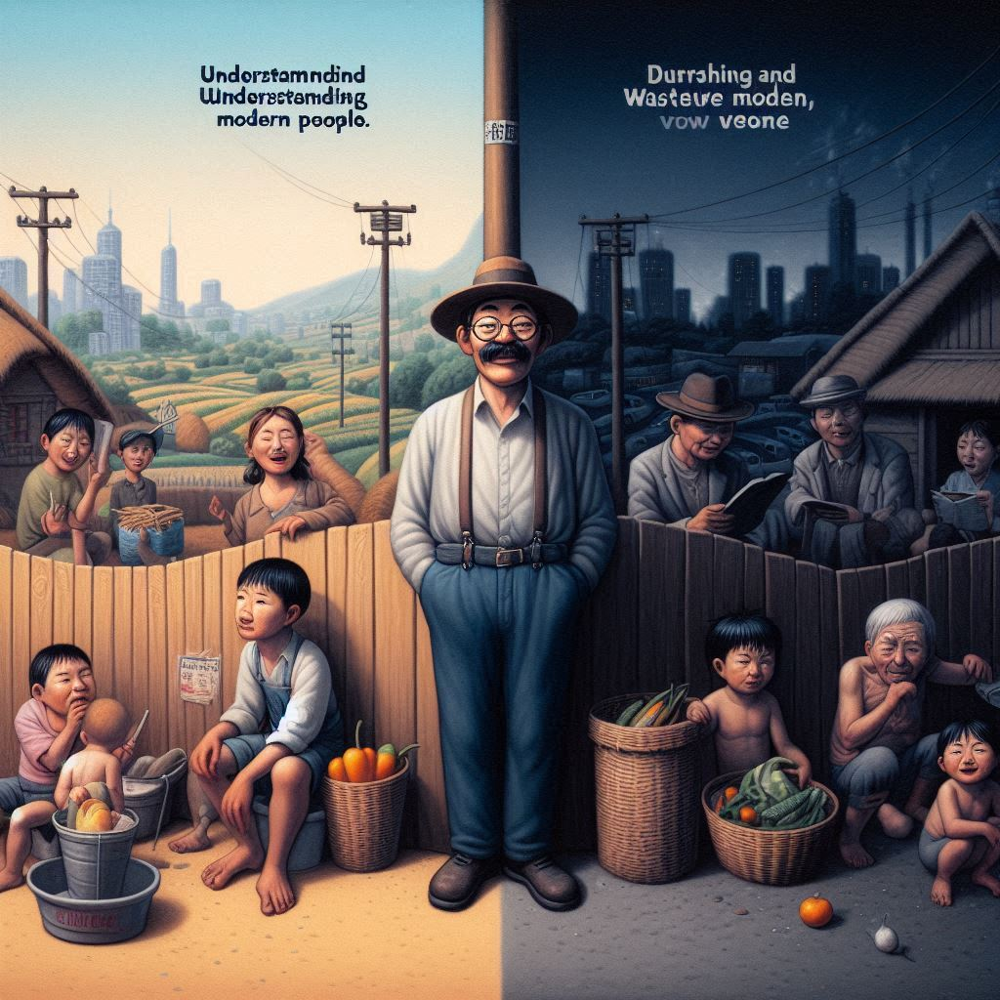

황만근은 이렇게 말했다.
목차
작가
성석제
출판일
2002년
감상평에 대한 AI그림
이 책은 주인공 황만근의 생애를 해학적인 방식으로 풀어낸 책이다. 선량한 황만근, 이와 대조되는 마을 사람들을 책 속에 풀어내어 이해타산적인 현대인을 나타내었다. 또한 1990년대 농가를 배경으로 하여 그때 나타났던 암울한 현실을 표현했다.

감상평에 대한 AI평가
AI평가
주제의식: 황만근의 생애를 해학적인 방식으로 풀어낸다는 점과, 선량한 황만근과 대조되는 마을 사람들을 통해 현대인의 이해타산적 성향을 표현한 것을 잘 설명하고 있습니다. 이는 독자들에게 책의 중요한 주제를 쉽게 전달하는 데 효과적입니다.
배경과 현실: 1990년대 농가를 배경으로 한 점과 그때 나타났던 암울한 현실을 표현한 부분이 잘 드러나 있습니다. 이로 인해 독자들이 당시의 사회적 상황을 이해하는 데 도움이 됩니다.
명확한 표현: 짧은 문장 안에 주요한 내용을 명확하게 담아내어, 독자들이 책의 핵심을 쉽게 파악할 수 있게 합니다.